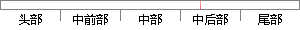

系统和普通任务都是通过create_task()函数来创建。
片段位置图

相似结果
相似片段： Z-Stack 协议栈操作系统抽象层(OSAL)API 操作系统...当调用 osal_create_task()函数来开始一个任务的...默认情况下, 当一个任务被创建后, 它自己的电源...
| 标题 | 《Z-Stack协议栈操作系统抽象层(OSAL)API_百度文库》 |
| 对比库 | PaperRater云论文库 |
| 网址 | http://wenku.baidu.com/link?url=TOJcjsdjQyPRzPce1uwOTDkwcLlhfMR_-K_cjKP8HW0Ej1Bmcgpz_Aq1oCf9aXiKkS_q1SLRWxDx5uxHgH9pVOgFB4MqSwOqg6Woxfgb2Km |
| 相似率 | 76% （轻度抄袭） |
※ 片段修改建议 ※
近似词参考：- 创建：建立 创立
- 任务：使命 义务
- 普通：通俗 平凡
- 系统：体系
- 通过：经由过程
系统自动生成语句：体系和通俗使命都是经由过程create_task()函数来建立。
注：本片段修改建议为系统自动生成，仅供参考。